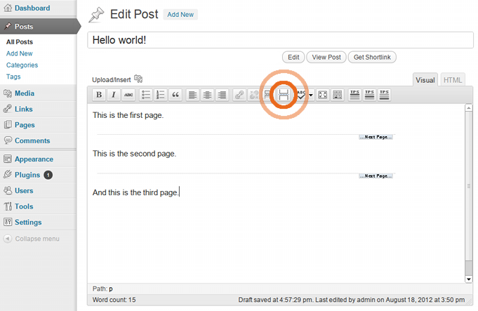
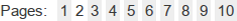
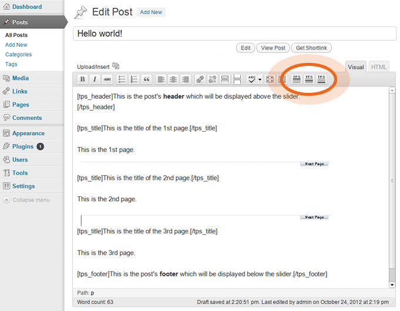
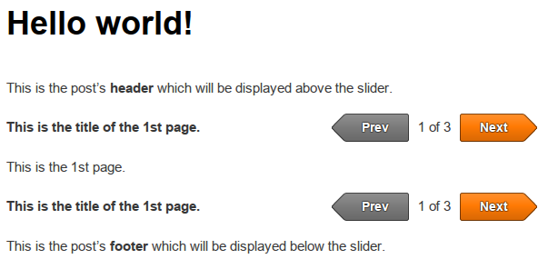
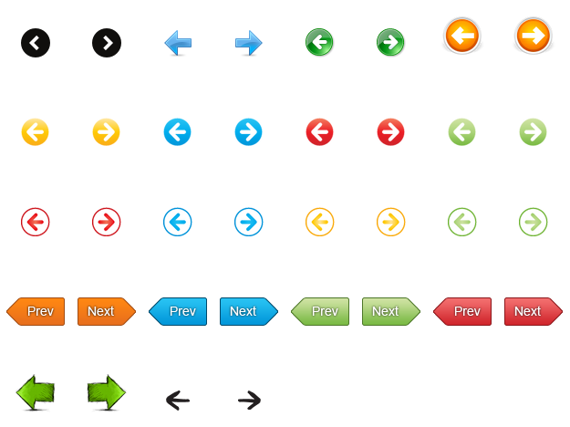

Theia
Post Slider
by
WeCodePixels
Version: 1.8.3
Updated: 2015-03-16
Open
a
Support
Ticket
This small guide will help you get your new plugin up and running in just a few minutes.
First of all, you need to download the plugin file and unzip it (if you're reading this, you've probably done so already). Now you need to do one of the following:
For customizing the slider, open the "Settings -> Theia Post Slider" page.
The slider is primarily used on posts with multiple pages. In order to split up your post into multiple pages, you can use the "Insert Page break" button which can be found inside the post editor.

Without the plugin, WordPress will display these pages using a navigation bar like this one:

Using the Theia Post Slider plugin, the pages can be browsed like this:
You can add a separate header that will be displayed above the slider, and a footer that will be displayed below. These will remain visible throughout all the post's pages. You can also add a title for each one of the pages. You can use the buttons highlighted in the image below, which do the following:
Here is an example that uses a header, a footer and a title for each page:

And here is the result:

You can change certain aspects of the plugin by opening the "Settings -> Theia Post Slider" page in the admin panel. You can instantly view the changes in the Live Preview section. The following settings are available:
This sets the slider's visual theme, mainly the previous and next buttons.
The animation effect used when moving from one slide to the other. There are 4 available effects: slide, fade, basic and none.
This sets the duration in milliseconds of the transition effect.
Between the previous and next buttons there is a text displaying the current and total number of slides. Here you can customize this text using the following variables: "%{currentSlide}" and "%{totalSlides}".
Some examples:
| Navigation text | Result |
| %{currentSlide} of %{totalSlides} | 2 of 5 |
| This is slide %{currentSlide} of %{totalSlides} | This is slide 2 of 5 |
| %{currentSlide} / %{totalSlides} | 2 / 5 |
The text that will be display on the "previous" button. Note that it works only on certain themes.
The text that will be display on the "next" button. Note that it works only on certain themes.
The width of the navigation buttons. Use this if you want both buttons to have the same width. Insert "0" for no fixed width. Note that it works only on certain themes.
By default, the slider is enabled only on posts. This will enable it also on pages. Note that some themes may be incompatible with this option.
By default, the slider is used only for navigation between a post's pages. If a post has just one page, the slider is not displayed. By enabling this option, the slider will appear on all posts and can be used to navigate not only between pages, but also between different posts.
If enabled, clicking the "previous" button on the first slide will open the previous post, and clicking the "next" button on the last slide will open the next post.
Theia Post Slider comes with about 60 different themes. Many of them are vector icons and support any custom color or size. They can be found in the "Settings -> Theia Post Slider" page in the admin panel.
Here is a showcase of some of the themes:

If the default themes are not visually compatible with your WordPress theme or you simply want to customize your slider as much as possible, you can easily create a custom theme. All you need is some knowledge of CSS. This chapter will help you get started.
First, go into the plugin's CSS folder ("wp-content/plugins/theia-post-slider/css") and copy the "base.css" file and paste it with another name such as "my-theme.css". The file now contains the basic CSS rules needed for the slider to function, and you can now edit it to your liking. You should also review some other themes' CSS files to see how they are made.
Second, you need to activate the new theme. Go into the plugin's settings page ("Settings -> Theia Post Slider") in the admin panel and select your new theme, which should be entitled "My Theme" if you named your file "my-theme.css".
To aid you in writing your custom theme's CSS, here is the basic HTML structure of the slider:
<div class="theiaPostSlider_nav _upper">
<a class="_prev">
<span class="_1"></span>
<span class="_2">Previous</span>
<span class="_3"></span>
</a>
<span class="_text"></span>
<a class="_next">
<span class="_1"></span>
<span class="_2">Next</span>
<span class="_3"></span>
</a>
</div>
<div class="theiaPostSlider_slides">...</div>
<div class="theiaPostSlider_nav _lower">
[same as the first navigation bar]
</div>
If disabled, the previous and next buttons use a <span> tag instead of an <a> tag and have the "_disabled" class:
<span class="_prev _disabled">...</span>
The plugin offers a humble API for developers who wish to extend its functionality. Right now you can hook your code into the tps.changeSlide" event, which triggers whenever the user navigates to another slide. Note that this event is fired after the slide has been loaded via AJAX (if applicable).
Sample code:
jQuery(document).bind('theiaPostSlider.changeSlide', function(event, slideIndex) {
alert('The user has navigated to slide number ' + (slideIndex + 1));
});
The plugin has been successfully tested with a wide range of plugins. Some, however, require a few extra settings to work properly.
Not all lightbox plugins will work with Theia Post Slider if the "Load slides efficiently using AJAX" option is enabled. We recommend using the popular Responsive Lightbox by dFactory with the following options:
In the admin panel, go to "Settings" -> "Theia Post Slider" -> "Advanced". Check the "Do not cache rendered HTML" option.
In the admin panel, go to "Social Lockers" -> "Common Settings". Check the "I use a dynamic theme" option, and add the following to the "jQuery Event" field: "theiaPostSlider.changeSlide" (without the quotes).
WeCodePixels